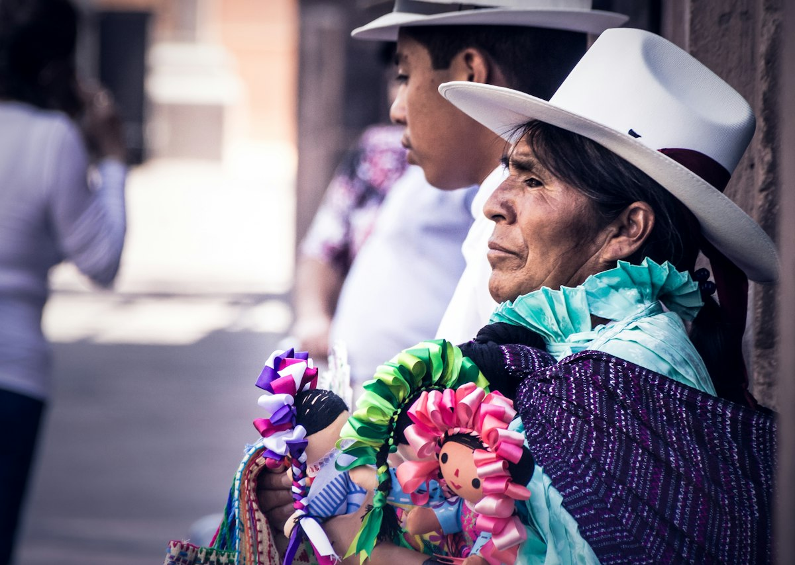
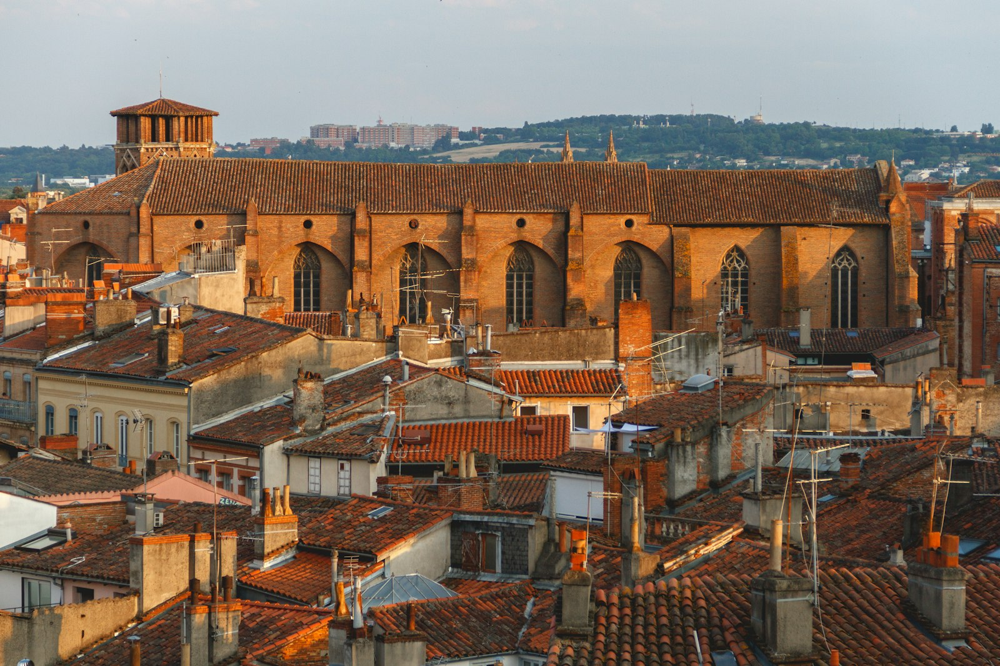
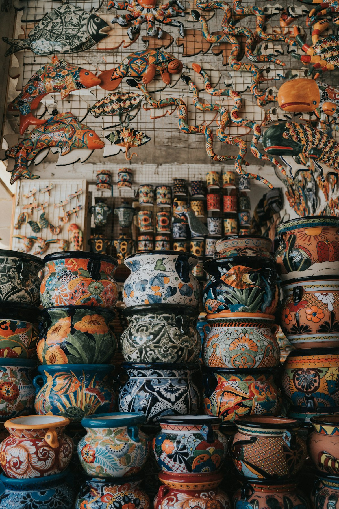
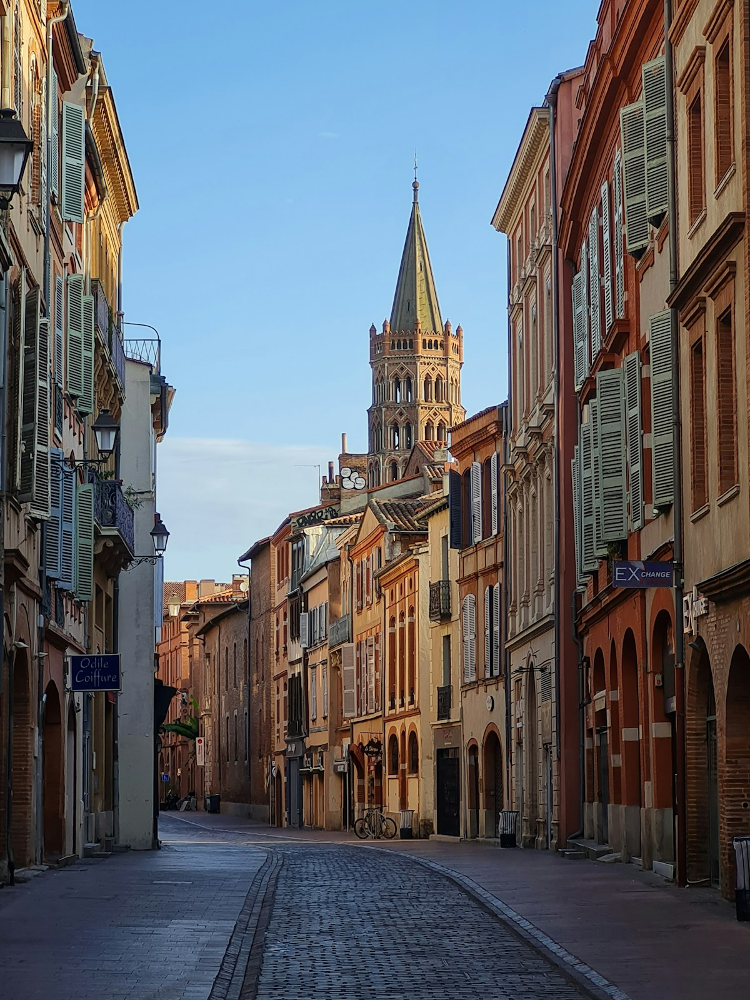
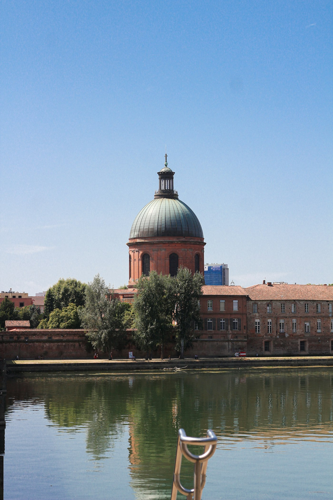
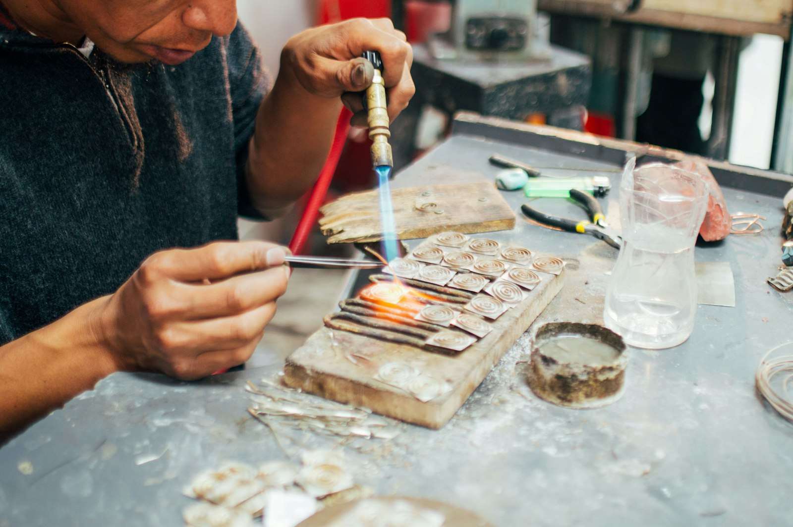

L'histoire
Une boîte en fer-blanc, vingt ans de Garonne et le bruit des grelots.
Coyolli, c'est d'abord l'histoire de Mariana. Une enfance dans le port de Veracruz, une grand-mère totonaque de Papantla, des études aux beaux-arts de Toulouse, et une manière de rester fidèle à deux pays à la fois.





Chapitre 1
Les grelots de Doña Chayo
Mariana est née à Veracruz, le port, dans une maison du quartier de La Huaca où l'on entendait la mer, les cargos et, tous les soirs, un son jarocho qui montait de la rue. Sa grand-mère, Rosario, que tout le monde appelait Doña Chayo, venait de Papantla, dans le pays totonaque, à trois heures de route vers le nord. Son père à elle avait été danseur pour la fête du Corpus, de ceux qui portent aux chevilles des rangées de petits grelots de cuivre. On les appelle des cascabeles en espagnol. En nahuatl, la langue que l'on parle encore dans la sierra de Zongolica, on dit coyolli.
Doña Chayo avait hérité des grelots. Jeune fille, elle les attachait à ses chevilles pour danser le fandango sur la tarima, cette estrade de bois où l'on frappe le zapateado. Puis elle les avait rangés dans une boîte en fer-blanc, sur l'armoire de la cuisine. Quand elle la descendait pour les polir, toute la maison sonnait. Mariana, à cinq ans, avait le droit de les enfiler sur une ficelle et de marcher avec, du salon au patio, en faisant le plus de bruit possible.
C'est aussi Doña Chayo qui l'a emmenée pour la première fois sous les Portales, au marché, choisir des perles. Pas n'importe lesquelles : les colliers de corail rouge et de filigrane que portent les Jarochas pour le carnaval, et les rangs de graines des femmes de Papantla. « Regarde les mains avant de regarder les perles », lui disait-elle. Mariana n'a jamais oublié cette règle.
Chapitre 2
Toulouse, la ville rose comme Tlacotalpan
En septembre 2006, Mariana a vingt-deux ans et un sac de voyage. Elle a obtenu une année d'échange à l'école des beaux-arts de Toulouse, l'actuel isdaT. Elle ne devait rester qu'un an. Elle n'est jamais vraiment repartie.
Ce qui l'a retenue, elle le raconte souvent : la brique. Le soir, quand le soleil tape sur les façades de la place Saint-Pierre ou sur le dôme de la Grave, Toulouse prend les couleurs des maisons de Tlacotalpan, ce village au bord du Papaloapan où l'on repeint les façades en mangue, en turquoise et en rose chaque année avant la fête de la Candelaria. « J'ai eu l'impression que la ville m'attendait. » Elle finit son cursus, obtient son diplôme national supérieur d'expression plastique en 2011, avec un projet sur les objets sonores et le geste des mains.
Suivent huit années à travailler comme scénographe et graphiste pour des théâtres et des musées de la région. Elle dessine des expositions, des affiches, des vitrines. Le soir, dans son appartement du quartier Saint-Cyprien, elle bricole des colliers pour ses amies avec ce qu'elle ramène de ses étés à Veracruz. Personne ne les prend encore au sérieux. Elle non plus.

Saint-Cyprien, rive gaucheLa Grave vue depuis la Garonne. L'atelier est à trois rues de là.
Regarde les mains avant de regarder les perles.Doña Chayo, grand-mère de Mariana, Papantla

Veracruz, 2018Chez Don Chucho, l'atelier de filigrane derrière les Portales. Le premier atelier partenaire.
Chapitre 3
La boîte revient
Doña Chayo s'éteint en janvier 2017, à quatre-vingt-onze ans. Au printemps, un colis arrive à Toulouse : la boîte en fer-blanc, avec les grelots à l'intérieur, et un mot de sa mère. « Elle voulait que ce soit toi. »
Mariana passe un mois sans l'ouvrir. Puis, un dimanche, elle l'ouvre, et elle fait ce qu'elle faisait à cinq ans : elle enfile trois grelots sur un cordon et les porte au cou. Le collier fait un bruit ridicule et merveilleux. Une amie le lui demande. Puis une autre. À l'automne 2017, elle s'inscrit à un cours du soir de bijouterie, apprend la soudure à l'argent, le sertissage, le polissage. Elle a trente-trois ans et l'impression de rattraper quelque chose.
En février 2018, elle prend un aller simple pour Veracruz avec un carnet et une question : qui fait encore ces bijoux à la main ? La réponse commence à deux rues de la maison de son enfance, chez Don Chucho, un vieux joaillier qui tord le fil d'argent en filigrane pour les boucles des Jarochas, et qui accepte de lui apprendre à condition qu'elle balaie l'atelier. Elle remonte ensuite vers Papantla, chez les femmes qui enfilent les graines et tressent la vanille. Puis dans la sierra de Zongolica, où l'on teint encore le fil à l'indigo. Puis, plus loin, à Taxco pour l'argent, à Santa Clara del Cobre pour les grelots, et jusqu'au Chiapas pour l'ambre.
Chapitre 4
Coyolli, aujourd'hui
La marque naît en 2019, avec dix colliers vendus sur un marché de créateurs à Toulouse, un samedi de novembre. Le nom s'impose tout seul. Le logo, trois grelots reliés par un fil, est dessiné la même semaine, avec les couleurs de la boîte et de Tlacotalpan : la terre cuite, la turquoise, le jaune mangue, le rose du carnaval. La frise en escalier sur les grelots, c'est celle des niches d'El Tajín.
Depuis, Mariana vit à ce rythme : deux voyages par an, en février, pour le carnaval de Veracruz, et en octobre, quatre à six semaines chacun, pour voir les artisans, choisir les matières et dessiner. Le reste du temps, elle est dans l'atelier de Saint-Cyprien, rive gauche, à trois rues de la Garonne. Elle y assemble tout, elle-même, pièce par pièce. Aucune n'est identique. Chacune porte un petit grelot de cuivre et un numéro.
Les grelots de Doña Chayo sont toujours dans la boîte. Ils ne sont pas à vendre. Mais ils sonnent encore, chaque fois qu'un collier part de l'atelier.
Repères
La ligne du temps
Veracruz, le port
Naissance dans le quartier de La Huaca. Enfance rythmée par le carnaval, le son jarocho et les grelots de Doña Chayo, venue de Papantla.
Arrivée à Toulouse
Année d'échange à l'école des beaux-arts. Coup de foudre pour la brique rose, qui a les couleurs des maisons de Tlacotalpan.
Diplôme des beaux-arts
DNSEP avec un projet sur les objets sonores et le geste des mains. Début d'une carrière de scénographe et graphiste.
La boîte en fer-blanc
Héritage des grelots de sa grand-mère. Premier collier, premier cours de bijouterie, première soudure à l'argent.
Le tour des ateliers
Veracruz, Papantla, Zongolica, puis Taxco, Santa Clara del Cobre et Simojovel. Les partenaires d'aujourd'hui sont rencontrés cette année-là.
Naissance de Coyolli
Dix colliers vendus sur un marché de créateurs toulousain. Le nom, le logo, les couleurs.
coyolli.com
La boutique en ligne ouvre. Les pièces restent montées à la main à Saint-Cyprien, une par une.
Envie de voir les mains derrière les perles ?
Les ateliers partenaires, du Veracruz aux autres régions, avec leurs techniques et leurs histoires.